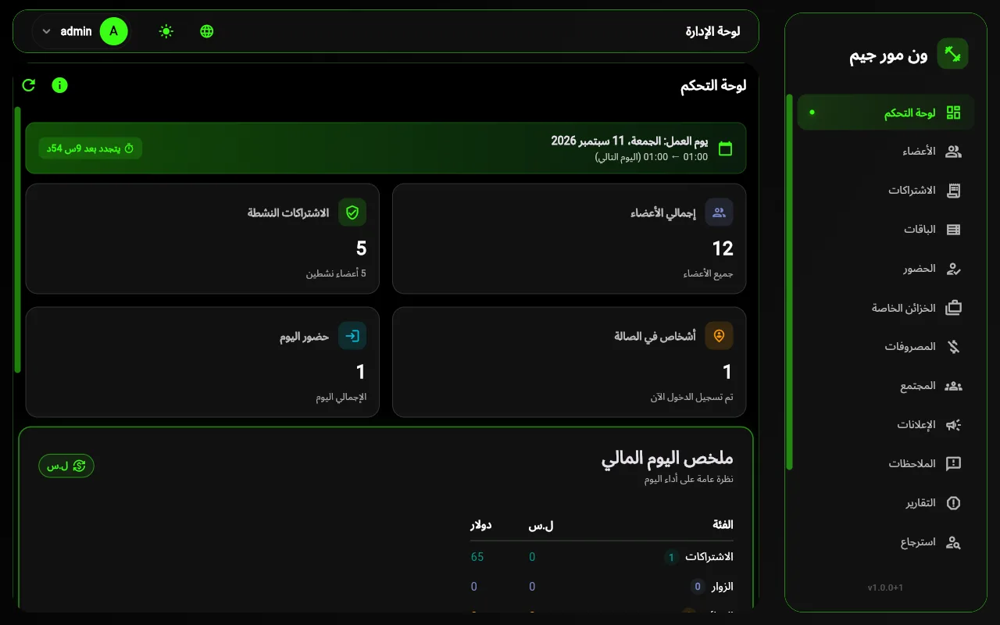
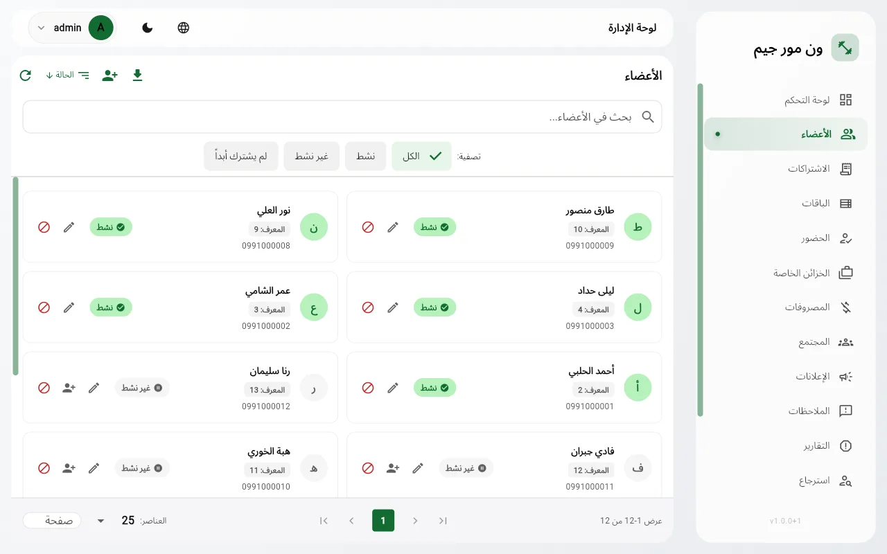
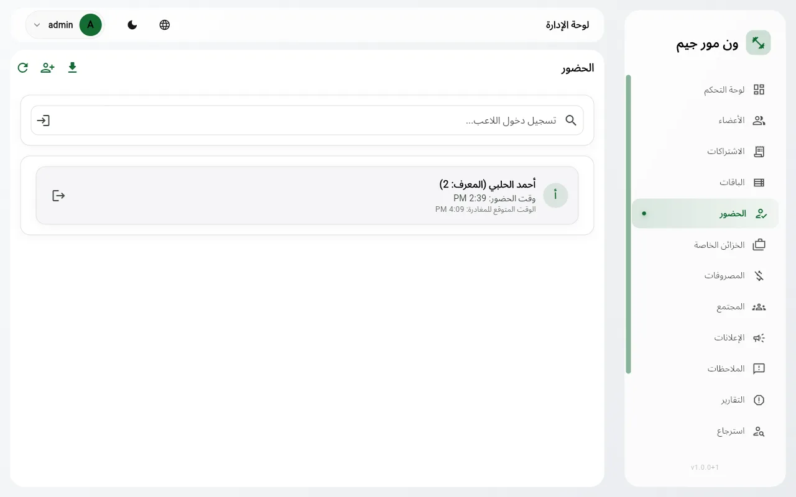
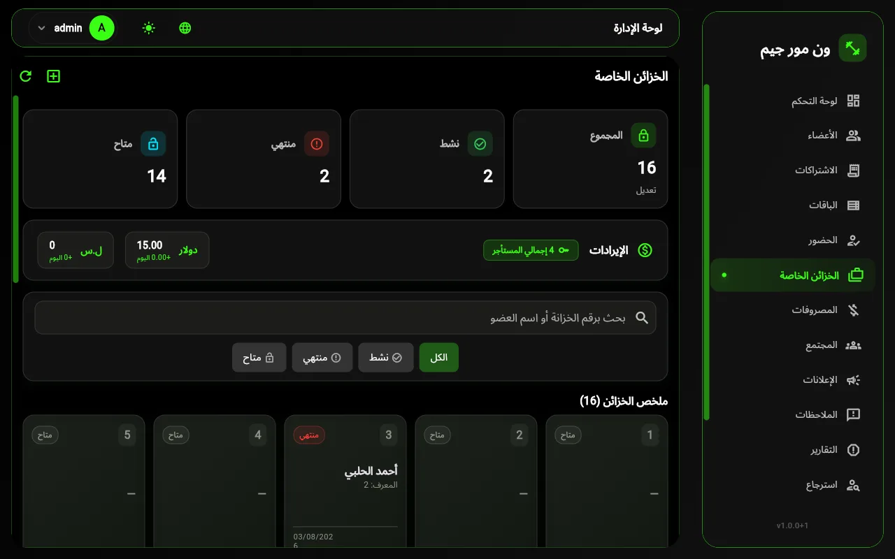
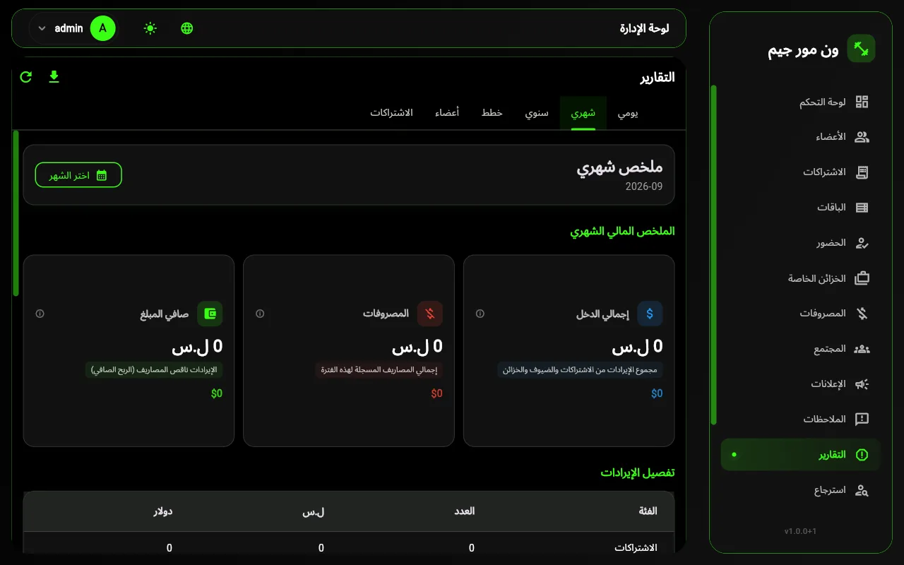
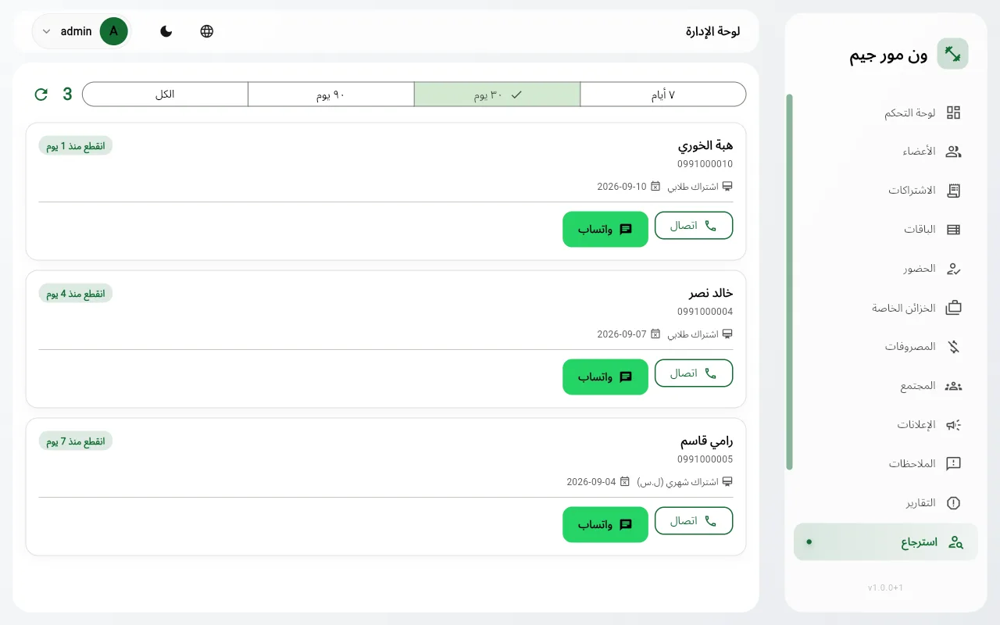
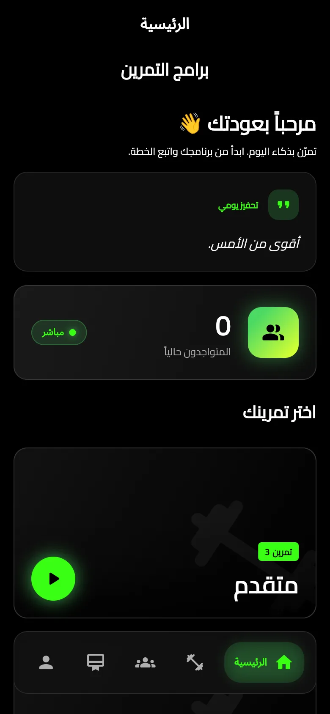
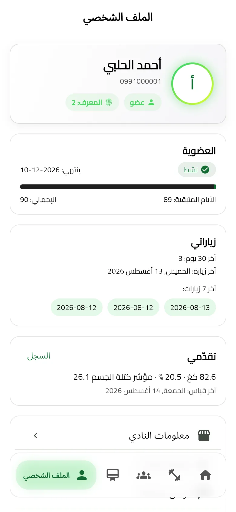
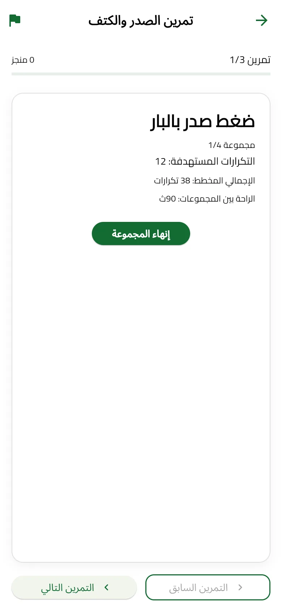
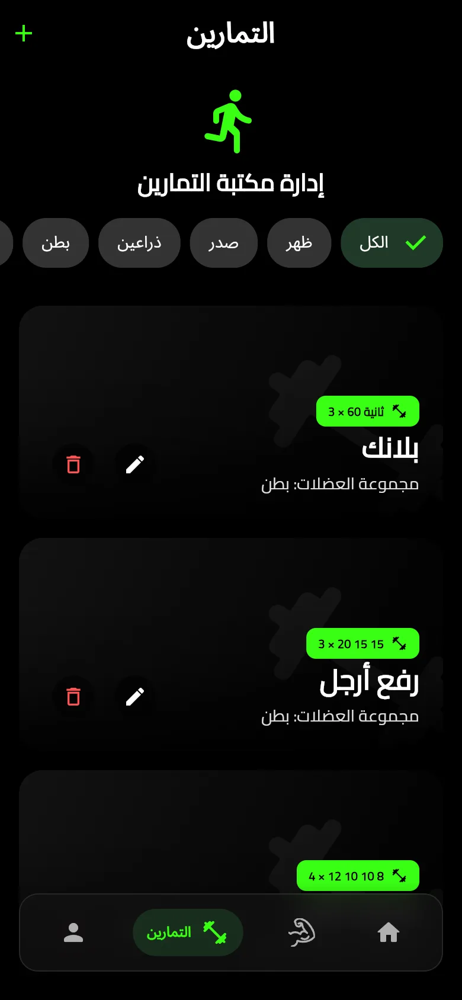

ما هو النظام
نظام متكامل لتشغيل نادٍ رياضي: الأعضاء والاشتراكات والحضور والخزائن والمصاريف والتقارير، مع تطبيق يضعه النادي بيد كل عضو، وتطبيق يبني به المدربون مكتبة التمارين.
بُني النظام أولاً لنادٍ عامل، وطُوّر معه شهراً بعد شهر حتى غطّى تفاصيل التشغيل اليومي التي تغيب عادةً عن الأنظمة الجاهزة: يوم عمل لا ينتهي عند منتصف الليل، عملتان لا تُجمعان في رقم واحد، أعضاء يدخلون برقم عضوية لا ببريد إلكتروني، وحد أسبوعي لزيارات الباقات الطلابية.
ما الذي يميّزه
يوم عمل قابل للضبط
يبدأ يوم التقارير بالساعة التي يحدّدها النادي (مثلاً 06:00 أو 13:00) لا عند منتصف الليل. كل مبيعة أو حضور تُحسب على «يوم النادي» الصحيح، ولو سُجّلت في الثانية فجراً.
دولار وليرة دون سعر صرف
كل باقة ومصروف وتقرير يحمل عملته. المجاميع تُعرض عمودين متجاورين، ولا يوجد في النظام أي تحويل يفسد الأرقام بعد أسبوع.
عربي حقيقي
واجهة عربية من اليمين لليسار في التطبيقات الثلاثة، مع تصدير PDF بخط عربي مضمّن وحروف متصلة، والتبديل إلى الإنجليزية بضغطة.
دخول بالبصمة
قارئ بصمة USB على مكتب الاستقبال: العضو يضع إصبعه فيُسجَّل حضوره فوراً، والموظف يفتح تطبيق الإدارة ببصمته دون كلمة مرور.
ثلاثة تطبيقات على قاعدة واحدة
ما يبيعه الاستقبال يراه العضو في هاتفه في اللحظة نفسها. ما يضيفه المدرب من تمارين يظهر للأعضاء فوراً. لا مزامنة يدوية ولا ملفات تُنقل.
سجل مالي لا يُمحى
الاشتراكات والخزائن لا تُحذف نهائياً أبداً، بل تُخفى. حذف اشتراك بالخطأ لا يغيّر أرقام يوم مضى، والاسترجاعات المالية تبقى موثّقة باسم العضو ورقم الخزانة.
المكوّنات الثلاثة
تطبيق الإدارة
- لوحة تحكم بأرقام اليوم لحظياً
- أعضاء، اشتراكات، باقات، حضور، خزائن، مصاريف
- تقارير يومية وشهرية وسنوية مع تصدير Excel وPDF
- بصمة، إعلانات، صندوق ملاحظات، استرجاع المنقطعين
- مراجعة تمارين الأعضاء قبل نشرها
تطبيق العضو
- الاشتراك الحالي وتاريخ انتهائه وعدد الزيارات
- مكتبة التمارين بالفيديو مرتّبة حسب البرنامج والعضلة
- تمارين خاصة بمؤقّت راحة ومؤشر تقدّم، تعمل دون إنترنت
- مجتمع التمارين: مشاركة وتعليق وإعجاب
- القياسات الجسمية، إعلانات النادي، إرسال ملاحظة أو تقييم مدرب
تطبيق المدرب
- بناء البرامج التدريبية: برنامج ← عضلة ← تمرين
- تمرين بمجموعات وتكرارات نصية (مثل 12 10 8) وفيديو وصورة
- إدارة أنواع العضلات، صور افتراضية جاهزة أو رفع صورة
- كل ما يُحفظ يظهر للأعضاء في هواتفهم فوراً
تعمل التطبيقات الثلاثة على قاعدة بيانات واحدة مستضافة سحابياً ومخصّصة للنادي وحده، فما يُسجَّل في أي تطبيق يظهر في التطبيقين الآخرين في اللحظة نفسها.
لمحة عن الشاشات
صور من النسخة الفعلية. كل الشاشات متوفرة بالوضعين الداكن والفاتح وباللغتين العربية والإنجليزية، وألوان الواجهة قابلة للتخصيص بهوية النادي.










ماذا يحصل عليه النادي
إدارة الأعضاء والاشتراكات
تسجيل الأعضاء، بيع الباقات بأي مدة وسعر وعملة، التجديد، وتنبيه عند تداخل الاشتراكات. باقات بحد زيارات أسبوعي أو بخزانة مضمّنة.
الحضور والزوار
تسجيل الدخول برقم العضو أو اسمه أو بالبصمة، تحقق تلقائي من الاشتراك، بيع دخول يومي للزوار، وخروج تلقائي بعد مدة يحدّدها النادي.
الخزائن والمصاريف
شبكة خزائن بحالة كل واحدة وحجز بفترة زمنية، ومصاريف بفئات يحدّدها النادي تُخصم من صافي اليوم.
التقارير
تقارير يومية وشهرية وسنوية، أداء الباقات، الأعضاء الجدد والمنتهون ومن لم يجدّد، بعملتين منفصلتين، وتصدير إلى Excel وPDF بخط عربي.
التواصل مع الأعضاء
إعلانات تصل هواتف الأعضاء فوراً، صندوق ملاحظات وتقييم للمدربين، وقائمة المنقطعين مع رسالة واتساب جاهزة.
تطبيق للعضو وتطبيق للمدرب
العضو يرى اشتراكه وزياراته وقياساته ويتدرّب ببرامج النادي أو ببرامجه الخاصة دون إنترنت. المدرب يبني مكتبة التمارين من هاتفه.
أمان مبني في الأساس
كلمات مرور مشفّرة لا تُقرأ، حماية من تخمين الدخول، بصمات لا تغادر مكتب الاستقبال، وسجل مالي لا يُمحى بحذف لاحق.
بهوية النادي
اسم النادي وشعاره وألوانه في تطبيق الأعضاء، وروابط تحميل التطبيقات كرموز QR يمسحها العضو من الاستقبال.
المتطلبات
مكتب الاستقبال
- حاسوب Windows 10 أو 11 (يُثبَّت التطبيق بملف تنصيب عادي)
- اتصال إنترنت
- اختياري: قارئ بصمة ZKTeco ZK4500 عبر USB مع برنامج تشغيله
الأعضاء والمدربون
- هاتف Android (يُحمَّل التطبيق من رمز QR في الاستقبال) أو iOS
- تطبيق المدرب يعمل أيضاً على Windows
الاستضافة
- قاعدة بيانات سحابية مخصّصة للنادي يوفّرها المزوّد
- لا يحتاج النادي إلى خادم خاص أو تجهيزات إضافية